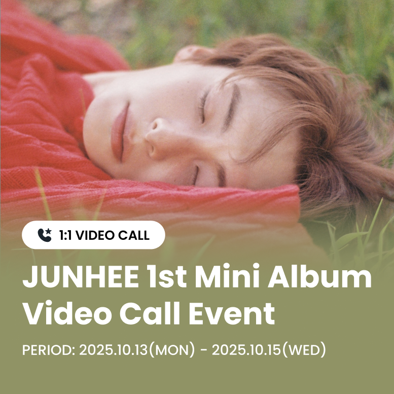
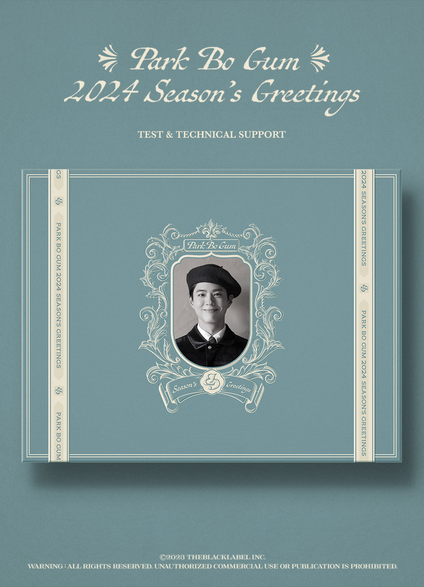

LiNC 到底值不值得掏钱？一个韩流老粉给你掰扯明白
LiNC 上有聊天室订阅、视频通话、投票应援各种花钱的地方。我算了小半年的账，把免费能做什么、付费到底换来什么、以及什么时候该停手，一次说清。
LiNC 到底值不值得掏钱？
这问题我纠结了快三个月才敢拍板。入坑的时候刚好赶上本命回归，身边老粉说"去LiNC官网看看聊天室、投票必投"，手一滑充了钱之后才发现——这个平台每个月都有新活动让你解囊，而且没有一个明确的"包月套餐"告诉你封顶要花多少。
所以这篇我就以一个真金白银砸过的用户身份，把 LiNC 的付费体系拆开来算一遍账，帮你决定哪些钱该花、哪些地方可以抠搜。
免费版到底给了什么
先别急着充，从LiNC下载装完就能用，不花钱也能进来，而且能做的事比你想象的多。
积分体系是它免费的核心。每天打开 App 看几个广告就能攒 Fan Points，攒够了可以用来投票应援。从LiNC文档里翻到的参考数据是：每天花 15 分钟看广告，一周能攒 1500 积分，刚好覆盖 SBS 人气歌谣一周的预投票量。而且积分还有 180 天有效期，节奏对了基本不会浪费。
浏览是全免费的。你不用订阅任何东西也能看公开的视频片段、艺人公告、活动日程——只有聊天室里艺人发的私人动态才需要付费订阅才能看。
部分投票用免费积分就能投。Streaming Support Vote 甚至没有每日上限，攒多少投多少，不花一分钱也能给本命冲榜。
一句话总结：不花钱 = 攒积分投票 + 看公开内容。如果你的需求就是应援打榜、追活动信息，免费版完全够用，而且够你用很久。
付费版到底多给了什么
付费的核心是艺人专属权益，LiNC 没有统一的会员体系——你为每个艺人的每项活动单独付费。
私人聊天室订阅是最基础的付费项。订阅之后能进聊天室看艺人发的日常文字、照片、活动预告，还能发消息跟其他订阅者一起互动。这里要注意一个容易被忽略的点：你发的普通消息所有订阅者都能看到，这不是一对一私信，是小型群聊。
视频通话活动是氪金重灾区。艺人会不定期开视频通话名额，你花钱买一个"名额"，轮到你的时候会有几十秒到一分钟的面对面通话窗口。这种活动的名额价格每次都不一样，热门艺人的通话名额经常几秒抢光。
Fan Story 定制消息是另一个花钱的地方。40 GEM（LiNC 的付费虚拟币）能发一条定制消息，艺人阅读了你能收到已读回执。GEM 需要用钱买，没有免费途径。
Photo Call 活动介于两者之间——花钱报名，中选的粉丝能跟艺人拍一张合影照。
还有各种应援投票活动里的付费选项——有的投票允许用 GEM 额外加投，1 GEM 对应额外票数，这是付费玩家拉开差距的地方。

分三类人算账
算账之前先说一个前提：LiNC 的付费是按项目散付，不是包月。所以"每个月花多少"完全取决于你追的团活跃度和你想参与的活动频率。
轻度用：每月花 0~30 块
这类人就一个本命，打歌期才活跃，平时基本不打开 LiNC。
免费版够不够？完全够。 每天 15 分钟攒积分，打歌期一周投满预投票，应援到位了。聊天室订阅可以等本命回归那一个月临时订——反正订阅是按月的，不订的月份也不会自动扣。
成本账：0 元。唯一的时间成本是每天 15 分钟看广告。如果你连这 15 分钟都不想花，那 LiNC 其实也没什么需要你专门装 App 的理由。
主力用：每月花 50~150 块
这类人追 2~3 个团，每个团都想订阅聊天室、有视频通话活动也想试试运气。
免费版够不够？不够，但可以混搭。 聊天室订阅建议挑一个你最追的团订，其他团的公开内容免费看就好。视频通话活动别全冲——热门团的名额性价比很低，你花的钱大概率只是让服务器更忙。GEM 主要用在 Fan Story 和有付费加投的投票上。
成本账：以一个团为例，聊天室订阅按月算 + 每月 1~2 次 GEM 消费，差不多 50~80 块。如果再加一个团的订阅，再往上加。每小时视频通话活动的时间价值：你花 X 块买一个几十秒的窗口，算下来每分钟 X 元——这个价换算成时薪够你思考三秒钟。
重度用：每月花 200+
这类人是多团老粉，所有活动都不想错过，视频通话必须抢、Photo Call 必须报、有付费加投的投票必须冲榜。
免费版在你这里只用来补积分缺口。 付费预算要有规划——视频通话活动之前先查清楚艺人这次开了多少个名额、历年多少钱、自己能不能抢到前几百个位置。Fan Story 别乱用 40 GEM 一条，留着艺人征集问答的时候发才有被读到的可能。
成本账：这类用户的"值不值"已经不是性价比问题，是情感投入。如果你花的钱换来了一次跟本命连线的机会、或者应援投票把歌送上了第一，那这笔钱在你心里就是赚的。但如果你冲了十次视频通话一次没抢到、投了二十次 Fan Story 全石沉大海，那就要停下来问自己——是我运气不好，还是这个平台本来就是这样？
替代方案：不付这笔钱有什么别的路
LiNC 不是唯一的渠道。
YouTube / 抖音 / Twitter 是免费替代。 大部分艺人的公开内容都会同步到社交平台，不用付费就能看。唯一的差别是 LiNC 聊天室里的私人动态不会外传，你不想跟路人抢消息节奏的话就得付费进。
粉丝团应援是另一条路。 很多韩流粉丝团会组织集体应援，你交一笔团费，团里统一攒积分投票、统一报名活动，成本比自己单独付费低，而且有组织不会错过重要时间节点。
降低使用频率也是方案。 不是每一次视频通话活动都要抢，不是每一篇 Fan Story 都要发，不是每一个投票都要冲到顶。挑你最在意的那一件事集中火力，其他的让它过去。

结论：三秒对号入座
最后给一个直接的行动清单：
- 闭眼付：多团重度粉，视频通话抢到过、应援投上过第一，花钱有明确回报的。你已经想清楚这笔钱换来了什么，继续就行。
- 再等等：刚入坑、还在观望期的。先免费用三个月攒积分投票，等本命真的有回归活动、你确认自己追得上节奏了，再决定要不要订阅聊天室。
- 永远不用付：只有一个本命、打歌期才活跃、不想花时间看广告攒积分的。LiNC 对你来说就是个信息查看器，免费够用。
我自己的答案是"主力用偏重度"——订了一个团的聊天室，GEM 只在打歌投票的付费加投上用，视频通话冲过三次全没抢到，后来就不冲了。每月大概 80 块，换一个月聊天室动态 + 几次投票加投，对我来说这个价位还能接受。但我也清楚，再往上加预算性价比会急剧下降。
LiNC 的定价设计其实挺鸡贼的——它不设封顶，你愿意花多少它就能给你开多少花钱的口子。所以最关键的不是"能不能付得起"，而是"你付的每一块钱换来了你真正想要的东西吗"。
LiNC 的这份文档资料在三个代码仓库都有备份，国内访问不顺畅的时候可以换着看：GitHub、Gitee、GitCode。